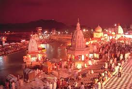
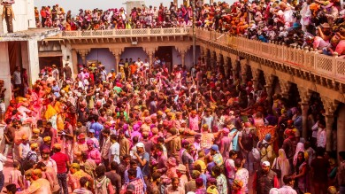
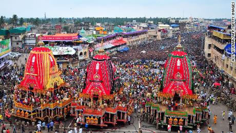
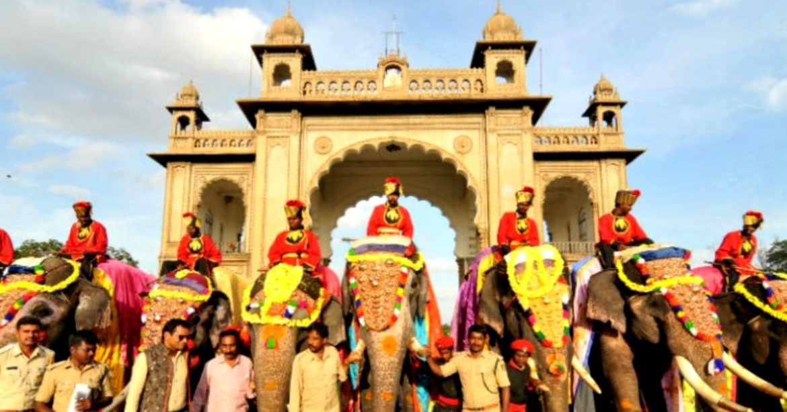
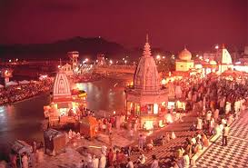
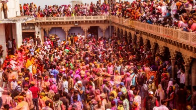
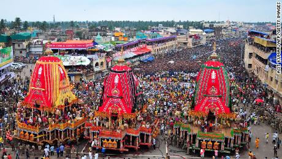
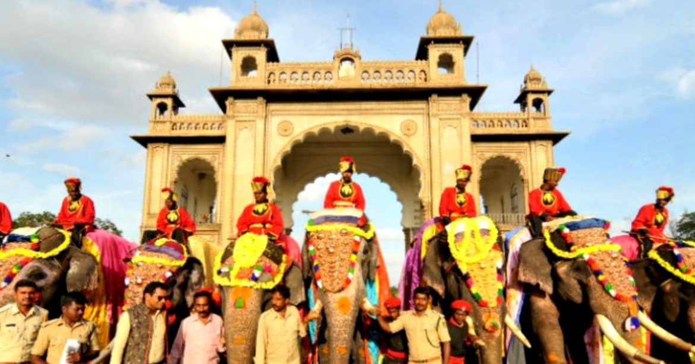

- INDIA, Hindustan,
Bharat, Republic of India are the name of same country and
it is the largest democracy in world. With roughly one-sixth of the world’s
total population, India is the second most populous country.
- Its capital is New Delhi. Its government is a constitutional republic that
represents a highly diverse population consisting of millions of ethnic groups
and likely thousands of languages.
Indian Flag
- As per historical facts, India was intermittently invaded by incursions
from beyond its northern mountain wall. Especially important was the coming
of Islam, brought from the northwest by Arab, Turkish, Persian, and other
raiders beginning early in the 8th century CE.
- Eventually, some of those raiders stayed; by the 13th century much of the
subcontinent was under Muslim rule, and the number of Muslims steadily increased.
Only after the arrival of the Portuguese navigator Vasco da Gama in 1498 and
the subsequent establishment of European maritime supremacy in the region did
India become exposed to major external influences arriving by sea, a process
that culminated in the decline of the ruling Muslim elite and absorption of
the subcontinent within the British Empire.
- Direct administration by the British, which began in 1858, effected a political
and economic unification of the subcontinent. When British rule came to an end in
1947, the subcontinent was partitioned along religious lines into two separate
countries—India, with a majority of Hindus, and Pakistan, with a majority of
Muslims; the eastern portion of Pakistan later split off to form Bangladesh.
- Many British institutions stayed in place (such as the parliamentary system of government);
English continued to be a widely used lingua franca; and India remained within the
Commonwealth. Hindi became the official language (and several other local languages
achieved official status), while a vibrant English-language intelligentsia thrived.

 






